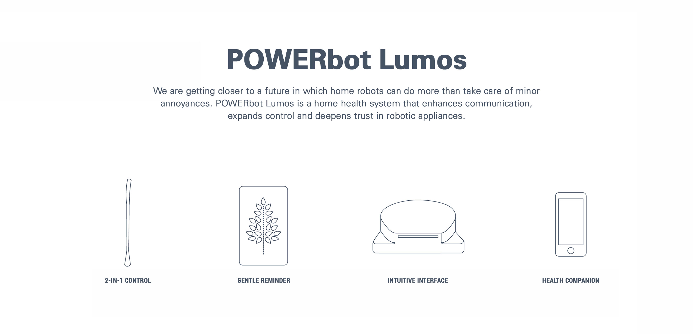
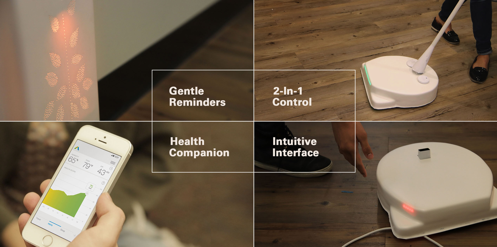
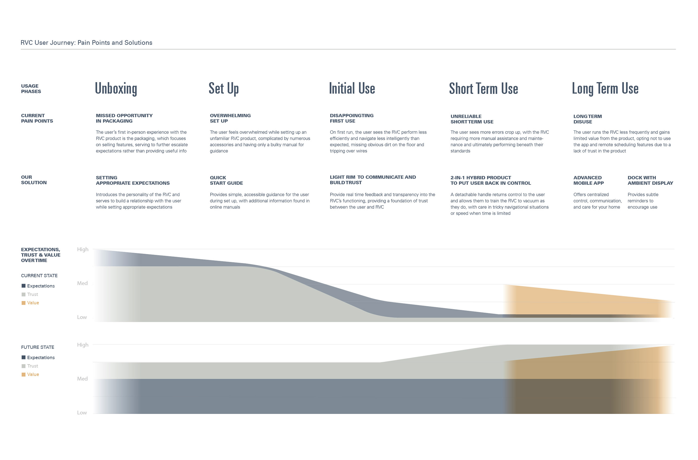
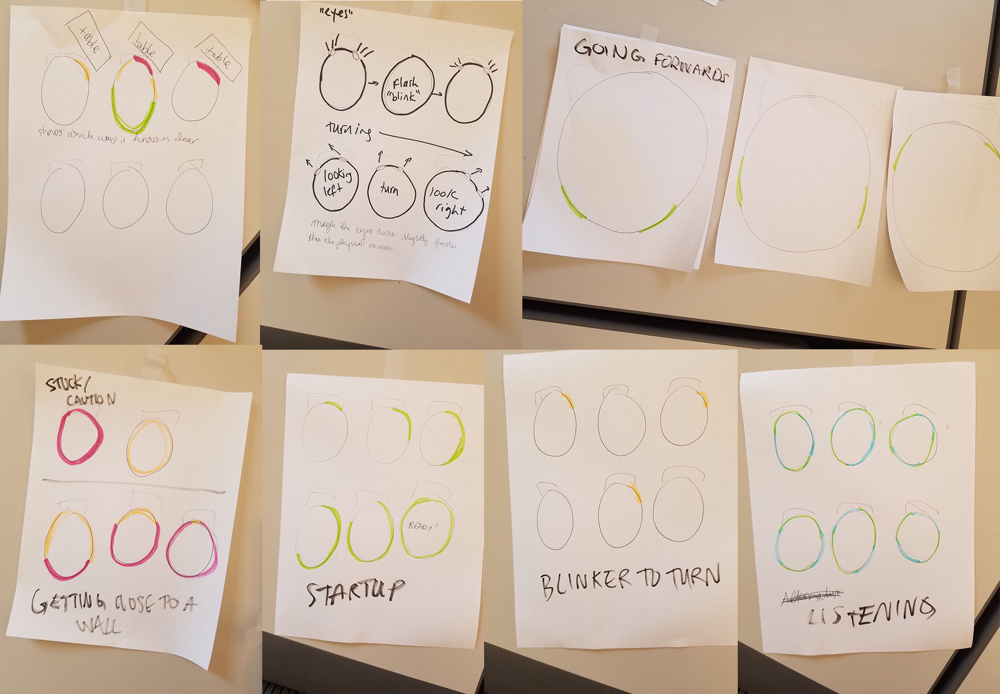
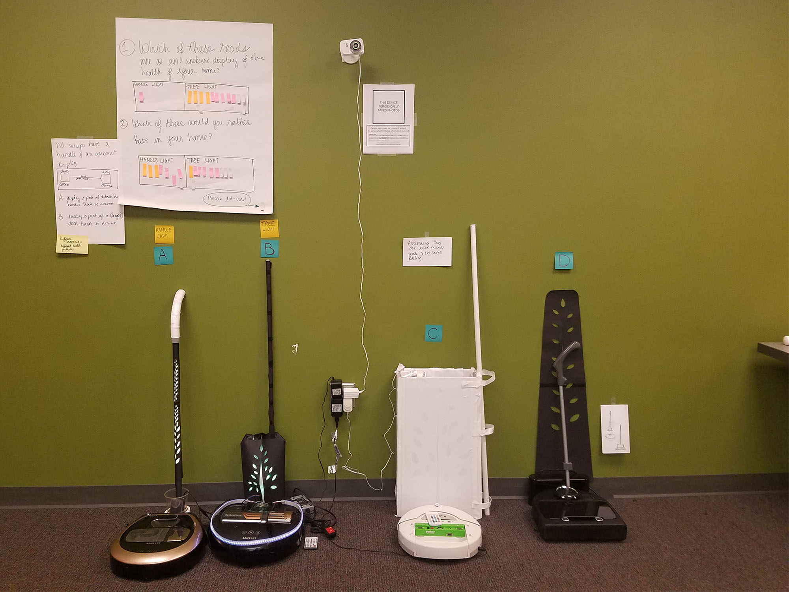
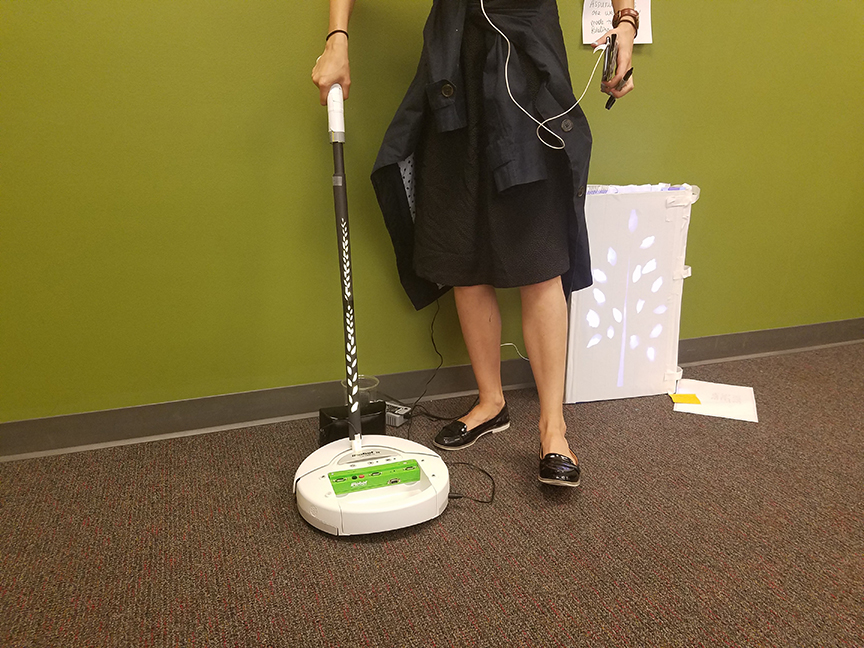
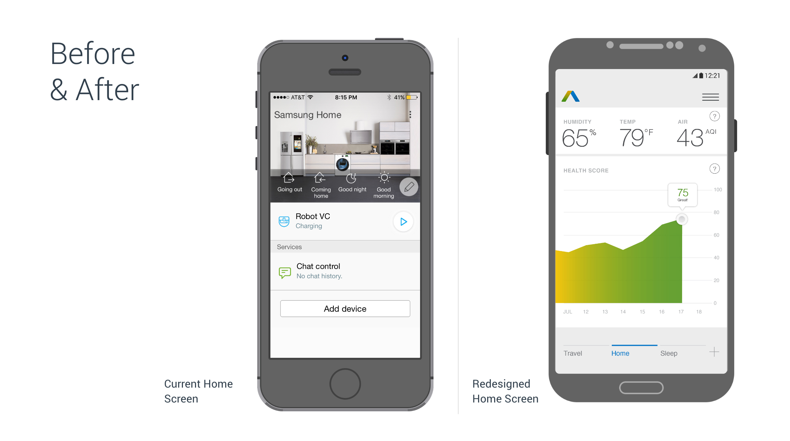
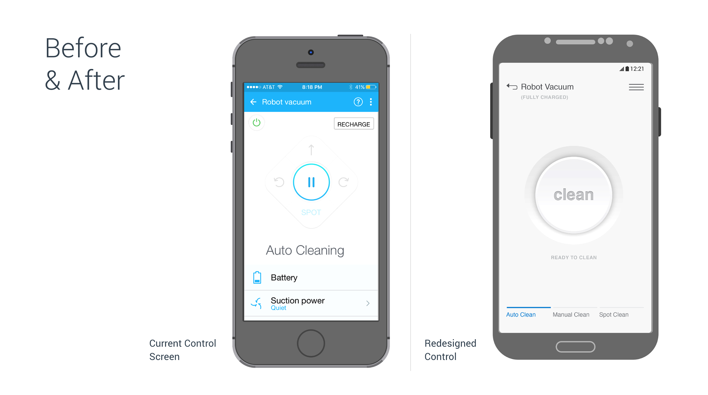
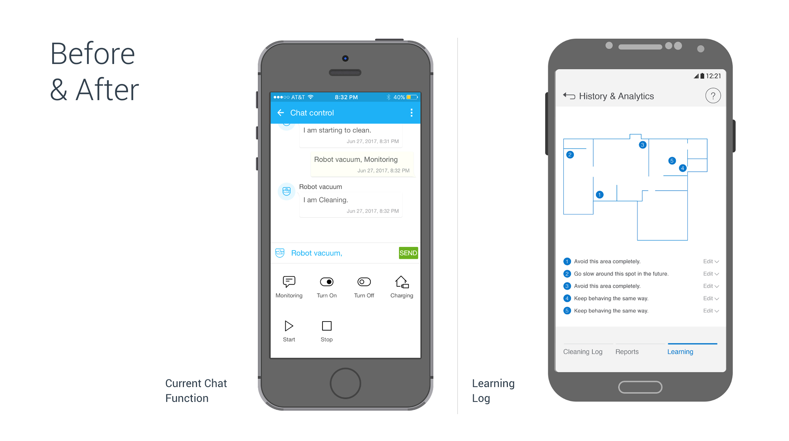

<!DOCTYPE html>
<!--  This site was created in Webflow. http://www.webflow.com  -->
<!--  Last Published: Thu Oct 19 2017 03:55:01 GMT+0000 (UTC)  -->
<html data-wf-page="594094e124107c1ebce332fb" data-wf-site="5936d171eee8942f4c1b7856">
<head>
  <meta charset="utf-8">
  <title>Home.io</title>
  <meta content="Home.io" property="og:title">
  <meta content="width=device-width, initial-scale=1" name="viewport">
  <meta content="Webflow" name="generator">
  <link href="css/normalize.css" rel="stylesheet" type="text/css">
  <link href="css/webflow.css" rel="stylesheet" type="text/css">
  <link href="css/angel-yu.webflow.css" rel="stylesheet" type="text/css">
  <script src="https://ajax.googleapis.com/ajax/libs/webfont/1.4.7/webfont.js" type="text/javascript"></script>
  <script type="text/javascript">WebFont.load({  google: {    families: ["Roboto Slab:100,300,regular","Roboto:100,300,regular,500,700","Roboto Condensed:300,regular,700","Roboto Mono:300,regular,500","Raleway:200,300,regular"]  }});</script>
  <!-- [if lt IE 9]><script src="https://cdnjs.cloudflare.com/ajax/libs/html5shiv/3.7.3/html5shiv.min.js" type="text/javascript"></script><![endif] -->
  <script type="text/javascript">!function(o,c){var n=c.documentElement,t=" w-mod-";n.className+=t+"js",("ontouchstart"in o||o.DocumentTouch&&c instanceof DocumentTouch)&&(n.className+=t+"touch")}(window,document);</script>
  <link href="images/Angel_Favicon-02.png" rel="shortcut icon" type="image/x-icon">
  <link href="images/Angel_Favicon-01.png" rel="apple-touch-icon">
</head>
<body>
  <div class="widescreen">
    <div class="homeio landingbanner projpage">
      <div class="fadeout logo"><a href="http://angelshiyaoyu.com" class="w-clearfix w-inline-block"><div class="logotext projpage">angel yu</div></a></div>
      <div class="home nav"><a href="http://angelshiyaoyu.com/about" data-ix="new-interaction" class="home link projpage resume">about /</a><a target="_blank" href="https://drive.google.com/open?id=0BzKc8r98oxcidExNdTZIMkhndjA" class="home link projpage resume">resume / </a><a href="http://www.angelshiyaoyu.com" class="home last link projpage resume">work /</a></div>
      <p class="projheading projpage">What does it take to trust a robot that roams in your home?</p>
      <div class="projpagediv roles w-clearfix">
        <p class="projpage roles w-clearfix"><span class="projpage roles"></span><span class="bold projpage roles">Client<br xmlns="http://www.w3.org/1999/xhtml"></span>Samsung Electronics<br><span class="bold projpage roles">Duration</span><br>8 months, 2017</p>
        <p class="projpage roles w-clearfix"><span class="projpage roles"></span><span class="bold projpage roles">Team</span><br>Angel Yu / Design Lead<br>Peggy Chau / Research Lead <br>Neil Bantoc / Prototyping Lead <br>Mark Micheli / Service Design <br>Kristina Wagner / User Testing</p>
        <p class="projpage roles w-clearfix"><span class="projpage roles"></span><span class="bold projpage roles">Skill Highlights</span><br>Scoping a Project<br>User Research<br>Analysis &amp; Synthesis<br>Design Facilitation<br>High-Fidelity Mock-ups</p>
      </div>
    </div>
    <div id="LandingBanner" class="projintro projpage">
      <p class="introtext projpage">Home.io is a project which operated under awareness of two contexts: the progression to an experience economy, and the infancy of in-home robotics. From the get-go, we wanted to make a product that is truly unique. To this end, we solved for current pain points in the user&#x27;s experience with robot vacuum cleaners (RVCs); additionally, we envisioned ways these devices could evolve to meet consumer needs.</p>
    </div>
    <div id="LandingBanner" class="projpage projsection projshowcase">
      <p class="designprocess projpage sectionlabels">here&#x27;s what we created</p>
      <div style="padding-top:56.27659574468085%;" class="video w-embed w-video"><iframe class="embedly-embed" src="https://cdn.embedly.com/widgets/media.html?src=https%3A%2F%2Fplayer.vimeo.com%2Fvideo%2F229158609&url=https%3A%2F%2Fvimeo.com%2F229158609&image=https%3A%2F%2Fi.vimeocdn.com%2Fvideo%2F649396853_1280.jpg&key=96f1f04c5f4143bcb0f2e68c87d65feb&type=text%2Fhtml&schema=vimeo" scrolling="no" frameborder="0" allowfullscreen=""></iframe></div>
    </div>
    <div class="projpage projsection">
      <p class="designprocess projpage sectionlabels">and How we got there</p>
      <h1 class="afterprocesslabel projpage sectiontitles">Building a Framework <br>for Understanding</h1>
      <p class="para projpage toppadding">In January 2017, the Samsung Home Appliances team approached us with a request: design the next generation of Samsung POWERbot robot vacuum. We knew we needed to give this a little more definition, so we started by learning everything we could about RVCs. We realized that in order to design a product, we needed to also understand the context. In this case, we needed to understand not only how RVCs work, but also the people, task, and environment an RVC exists in relationship with. The team pulled from a combination of desk and field research methods to excavate each of these layers below.</p></div>
    <div class="projpage projsection w-clearfix">
      <h1 class="projpage sectiontitles w-clearfix">Top Insights</h1>
      <p class="insights para projpage">/ Consumers have high expectations which are unmet </p>
      <p class="_2 insights para projpage w-clearfix">/ Consumers do not trust their robot vacuum cleaners </p>
      <p class="_2 insights para projpage w-clearfix">/ Cleaning restores the value of care homes provide </p>
    </div>
    <div class="projpage projsection">
      <h1 class="projpage sectiontitles">Reframe: <br>Designing for Trust</h1>
      <p class="para projpage toppadding">All of these insights are critical to designing better robot vacuum experiences. However, the second insight offered the richest opportunity in terms of interaction design. We decided, therefore, to devote our attention to a single question (while addressing insights one and three with less emphasis): how might we make people feel comfortable with using robot vacuums in their home?<span class="insight"><br></span></p>
    </div>
    <div class="projpage projsection">
      <h1 class="projpage sectiontitles">Identifying Opportunities <br>in the User Journey</h1>
      <p class="para projpage toppadding">Having established our design inquiry, we took a step back and mapped out the user&#x27;s journey from product unboxing to long term usage. This step helped us to identify current pain points, envision ideal experiences, and brainstorm ways to realize the ideal future. To facilitate the visioning process, we used Crazy 8&#x27;s to generate as many ideas as possible. We voted on the best ones as a team, then further narrowed them down through speed dates with users.</p>
    </div>
    <div class="fullblownimage projpage projsection w-clearfix">
      <p class="caption fullblownimage projpage">A journey map helped us to summarize all of the research data we gathered and served as a tool for communication and brainstorming.</p>
    </div>
    <div class="projpage projsection">
      <h1 class="projpage sectiontitles">Building Trust Through<br>Communication</h1>
      <p class="para projpage toppadding">One of the pain points that lead to a lack of trust is the fact that people have no idea what is going on when a robot behaves in a way they did not expect. We came up with a solution which uses a light rim to increase the transparency of the robot&#x27;s internal state. We created a series of light sequences, tested them, and found that people appreciated greater communication, but had reservations about the intensity and frequency of the communication. Based on this feedback, we toned down the brightness of the lights and determined the best scenarios for usage. </p></div>
    <div class="projpage projsection">
      <h1 class="projpage sectiontitles">Nudging Behaviors Through<br>Reminders</h1>
      <p class="para projpage toppadding">The dock combines the idea of communication with care. In this case, light takes the form of an ambient display, which provides gentle feedback on the frequency you&#x27;ve run your robot vacuum as well as the overall health metrics of your home. The fact of it being stationery offered opportunities for consistent communication, which encourages patterns and creates value. In user testing, the dock is well received, and we worked to gradually improve the size and form.</p></div>
    <div class="projpage projsection">
      <h1 class="projpage sectiontitles">Combining the Best of Two Worlds</h1>
      <p class="para projpage toppadding">The handle originates from a phenomenon we observed through surveys, interviews, and contextual inquiry: while RVCs are advertised to be fully autonomous, the truth is that users found it easier and more efficient to physically alter its actions, because it is not doing what they want. Many of these users also own a regular vacuum cleaner in addition to an RVC. Why not make available the best of both worlds? The crux of our prototyping challenge was making the handle easy to attach and detach – which we eventually accomplished with two vacuum formed pieces that locked together under pressure. </p></div>
    <div class="projpage projsection w-clearfix">
      <h1 class="projpage sectiontitles">Creating an Intuitive &amp; Valuable<br>Mobile Experience</h1>
      <p class="para projpage toppadding">The app is ultimately what ties all of our themes together: communication, control, and care, all of which add up to building trust and creating value. We found the current Samsung Smart Home app to be poorly perceived due to a cluttered UI, confusing terms, and lack of functionality. We focused then on making the app more intuitive through a simplified UI, and investigating top concepts that came up in our visioning session. We conducted several rounds of user testing, which validated our concepts and helped to refine details of the design.</p>
      <p class="caption projpage">Rethinking of the home screen as a health dashboard</p>
      <p class="caption projpage">Redesigned control makes interaction more intuitive through visual hierarchy and progressive disclosure</p>
      <p class="caption lineafter projpage">Redesigned communication with the robot vacuum</p>
    </div>
    <div class="projpage projsection">
      <h1 class="projpage sectiontitles">Final Thoughts</h1>
      <p class="bottompadding para projpage toppadding">The biggest challenge the team came across was scoping. We were an ambitious group, and wanted to solve things at a holistic and root level. However, a big problem can be made up of smaller problems, and each of these demands a solution of its own. We learnt of this as the project went on and produced a much better result when we started to define the problem to a narrower scope. <br><br>Where to start when presented with something overwhelming and complex? I think there is great satisfaction to be gained in solving just a piece of the puzzle. With solving each puzzle comes a step closer to a vision. This project taught me the importance of perseverance and I think, by treating each challenge with attentiveness, we are well on our way to solving bigger problems.</p>
    </div>
    <a href="http://www.angelshiyaoyu.com/parkhelper" class="projsectionhomelinkblock w-inline-block">
      <div class="home projsection">
        <div data-ix="scrollintoview-text" class="casestudy"><span class="home projname">parkhelper</span> / Peer Economy / Value Creation / Community &amp; Culture / Mobile App / UX &amp; UI Design / Branding</div>
        <div data-ix="scrollintoview-text" class="homeprojdes">What values can property owners and drivers create together?</div>
      </div>
    </a>
    <a href="http://www.angelshiyaoyu.com/safenet" class="projsectionhomelinkblock w-inline-block">
      <div class="home projsection">
        <div data-ix="scrollintoview-text" class="casestudy"><span class="home projname">Safenet</span> / Design Process / Scoping / Reframe / Responsive Web</div>
        <div data-ix="scrollintoview-text" class="homeprojdes">How can we reduce stress in housing emergencies?</div>
      </div>
    </a>
    <div class="finally home projsection w-row">
      <div class="column-1 finally w-col w-col-6 w-col-medium-6 w-col-small-6">
        <h1 data-ix="scrollintoview-text" class="casestudy logitech">Logitech Campaign</h1><a href="http://angelshiyaoyu.com/finally-campaign" class="finallylink w-inline-block"></a></div>
      <div class="column-2 homesections leftborder w-col w-col-6 w-col-medium-6 w-col-small-6">
        <h1 data-ix="scrollintoview-text" class="casestudy logitech">SumTotal UI Redesign</h1><a href="http://angelshiyaoyu.com/sumtotal" class="finallylink w-inline-block"></a></div>
    </div>
    <div class="footer">
      <div class="w-row">
        <div class="column-1 w-col w-col-5">
          <div class="contactdiv w-clearfix"><a id="Contact" href="mailto:ysy_413@yahoo.com" class="contactlink w-inline-block"></a><a href="https://www.linkedin.com/in/angelshiyaoyu/" id="Contact" target="_blank" class="contactlink w-inline-block"></a><a href="https://www.flickr.com/photos/139566503@N02/albums" id="Contact" target="_blank" class="contactlink w-inline-block"></a></div>
        </div>
        <div class="column-2 w-col w-col-7">
          <div class="backtotopdiv w-clearfix"><a href="index.html" class="nextprojectbutton w-button">home /</a><a href="#LandingBanner" class="nextprojectbutton w-button">back to top /</a></div>
          <p class="copyright">© 2016 made by angel shi yao Yu</p>
        </div>
      </div>
    </div>
  </div>
  <script src="https://ajax.googleapis.com/ajax/libs/jquery/2.2.0/jquery.min.js" type="text/javascript"></script>
  <script src="js/webflow.js" type="text/javascript"></script>
  <!-- [if lte IE 9]><script src="https://cdnjs.cloudflare.com/ajax/libs/placeholders/3.0.2/placeholders.min.js"></script><![endif] -->
  <script type="text/javascript">
 $(function(){
            var lastScrollTop = 0, delta = 5;
            $(window).scroll(function(event){
               var st = $(this).scrollTop();
               if(Math.abs(lastScrollTop - st) <= delta)
                  return;
        if (st > lastScrollTop){
               // downscroll code
            $("#MagicMenu").css("top","-120px")
               .hover(
                   function() {
                       $("#MagicMenu").css("top","0px");
                   }
               )
           } else {
              // upscroll code
              $("#MagicMenu").css("top","0px");
           }
               lastScrollTop = st;
            });
        });
  </script>
</body>
</html>